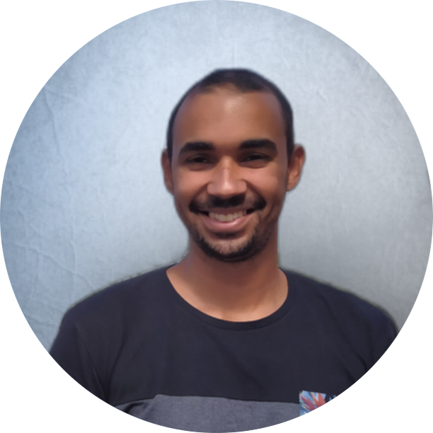

Oi, me chamo Gabriel Santos, muito prazer! Sou natural de São Gonçalo,
um município da região metropolitana do Rio de Janeiro mas atualmente
moro em São José dos Campos. Tenho 24 anos e faço aniversário no fim
de maio. Sou estagiário em desenvolvimento fullstack na Buser e
estudante de Ciência da Computação pela Faculdade Descomplica. Além
disso também sou estudante de Gastronomia na UFRJ. Estudo programação
desde 2018 mas só fui começar a me dedicar integralmente a isso e
atuar profissionalmente em 2022. Programo em JS, Python e gosto
bastante da área de dados, que tenho estudado com maior profundidade
desde que entrei no Busertech.
Entrar em contato
História
2016
Em 2016 entrei para o curso de licenciatura em física na
Universidade Federal do Rio de Janeiro.
2017
Em 2017 eu comecei a integrar a equipe de um projeto de extensão que
ensinava física através de robótica educativa e de baixo custo +
programação para crianças do ensino fundamental. Esse projeto ocorre
até hoje no CAp UFRJ, o Colégio de Aplicação da UFRJ no bairro da
Lagoa, zona sul do Rio. Foi aí que comecei a estudar Python e esse
foi meu ingresso no mundo da programação.
2018.1
Em 2018 decidi que queria fazer ciência da computação e comecei a
cursar matérias do curso usando minha matrícula da UFRJ. Passei um
período estudando algumas coisas como se fosse aluno do curso e no
fim do período fiz a prova de transferência. Apesar dos esforços
nenhum dos que tentaram aquela prova passou.
2018.2
Depois de ter visto estilos de vida completamente diferentes do meu
quando estudei com o pessoal de CC me quesitonei bastante se tinha
capacidade de trabalhar com isso. Quando reprovei na transferência
resolvi ir para outra área que me interessava: a gastronomia.
2021
Em 2021, depois de 2 anos de trabalho em cozinhas eu decidi voltar a
exercitar minhas habilidades de programação e me preparar para
trabalhar com isso. Nesse momento alguns amigos tinham migrado e me
inspiraram/apoiaram a tentar.
2022
Em 2022 eu já tinha saído do meu trabalho atual para me dedicar
totalmente aos estudos. Depois de alguns meses foi quando minha vida
mudou de uma forma incrível através do projeto Busertech e aqui
estamos.